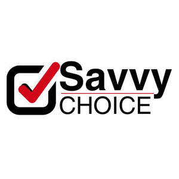
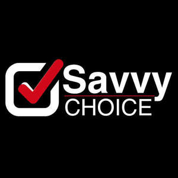

Trade Mark Journal No.2025/010 7 March 2025
UK00004156914 6 February 2025 (35,41,42)
Mark 1

Mark 2

- Class 35
- Retail services relating to clothing; Business management of wholesale and retail outlets; Business management of retail outlets; Retail store services in the field of clothing; Administration of the business affairs of retail stores; Online retail store services in relation to clothing; Retail services in relation to confectionery; Online retail store services relating to clothing; Retail services connected with the sale of furniture; Unmanned retail store services relating to food; Retail services in relation to footwear; Unmanned retail store services relating to drink; Retail services in relation to beer; Retail services in relation to jewellery; Retail services in relation to furnishings; Retail services in relation to furniture; Retail services in relation to clothing; Retail services in relation to saddlery; Retail services in relation to tobacco; Retail services in relation to bakery products; Shop retail services connected with carpets; Retail services in relation to seafood; Retail services in relation to smartphones; Retail services relating to jewelry; Retail services in relation to smartwatches; Retail services in relation to coffee; Retail services in relation to lighting; Retail services relating to furniture; Retail services in relation to toys; Retail services in relation to chocolate; Retail services connected with stationery; Retail services in relation to downloadable virtual footwear; Online retail services for downloadable virtual clothing; Retail services relating to bakery products; Online retail services relating to jewelry; Online retail services relating to clothing; Retail of third-party pre-paid cards for the purchase of clothing; Retail services in relation to yarns; Retail services in relation to cocoa; Online retail services relating to cosmetics; Retail services relating to candy; Management of a retail enterprise for others; Retail services in relation to horticulture products; Retail services in relation to cookware; Retail services relating to food; Retail services in relation to fashion accessories; Retail services in relation to pet products; Retail services relating to delicatessen products; Retail services in relation to bags; Retail of third-party pre-paid cards for the purchase of entertainment services; Retail services in relation to metal hardware; Retail services in relation to desserts; Retail services in relation to computer hardware; Retail services in relation to games; Retail services in relation to headgear; Retail services in relation to meats; Retail services in relation to downloadable virtual clothing; Retail services in relation to fuels; Business management of wholesale outlets; Retail services in relation to lubricants; Retail services in relation to fabrics; Retail services in relation to vehicles; Online retail services in relation to downloadable virtual footwear; Retail services in relation to tableware; Online retail services relating to toys; Retail services in relation to gardening products; Retail services in relation to foodstuffs; Retail services in relation to dairy products; Retail services in relation to pushchairs; Retail services in relation to clothing accessories; Online retail store services relating to cosmetic and beauty products; Retail services relating to horticultural products; Retail services in relation to downloadable virtual headwear; Retail of third-party pre-paid cards for the purchase of telecommunication services; Retail services in relation to heaters; Retail services in relation to sorbets; Retail services in relation to safes; Retail services in relation to wearable computers; Mail order retail services for cosmetics; Retail services for computer software; Retail services in relation to bicycle accessories; Online retail services relating to handbags; Online retail services in relation to downloadable virtual clothing; Mail order retail services for clothing; Retail services in relation to chemicals for use in horticulture; Retail services in relation to car accessories; Retail services in relation to horticulture equipment; Retail services in relation to floor coverings; Retail services in relation to downloadable virtual handbags; Retail services in relation to stationery supplies; Retail services relating to batteries; Online retail services in relation to downloadable virtual headwear; Retail services in relation to toiletries; Retail services in relation to cutlery; Retail services in relation to paints; Retail services relating to home textiles; Retail services relating to fruit; Retail services in relation to physical therapy equipment; Retail services in relation to non-alcoholic beverages; Retail services relating to automobile accessories; Retail services in relation to teas; Retail services in relation to bicycles; Retail services in relation to umbrellas; Retail services in relation to luggage; Retail services relating to accumulators; Retail shop window display arrangement services; Retail services relating to horticultural equipment; Online retail services for downloadable digital music; Online retail services in relation to downloadable virtual handbags; Retail services in relation to weapons; Online retail services relating to luggage; Retail services in relation to domestic electronic equipment; Retail services in relation to frozen yogurts; Retail services connected with the sale of clothing and clothing accessories; Retail services in relation to educational supplies; Mail order retail services for clothing accessories; Retail services relating to furs; Retail services in relation to agricultural equipment; Retail services in relation to chemicals for use in agriculture; Retail services in relation to sporting equipment; Retail services relating to flowers; Retail services in relation to articles for use with tobacco; Retail services in relation to sanitary installations; Retail services in relation to hair products; Retail services in relation to pharmaceutical preparations; Retail services in relation to domestic electrical equipment; Retail services in relation to building materials; Retail services in relation to festive decorations; Retail services relating to alcoholic beverages; Retail services in relation to computer software; Retail services in relation to construction equipment; Retail services in relation to chemicals for use in forestry; Retail of third-party pre-paid cards for the purchase of multimedia content; Retail services in relation to freezing equipment; Retail services relating to sporting goods; Retail services in relation to mobile phones; Retail services in relation to kitchen appliances; Retail services in relation to earthmoving equipment; Online advertising; Online marketing; Online advertisements; Advertising the goods and services of online vendors via a searchable online guide; Online ordering services; Online advertising services; On-line advertising; Providing a searchable online advertising guide featuring the goods and services of online vendors; Providing a searchable online advertising guide featuring the goods and services of other on-line vendors on the internet; Providing searchable online advertising guides; Online advertising on computer networks; Online advertising on a computer network; Online business networking services; Business information services provided online from a computer database or the internet; Compilation of online business directories; On-line auctioneering services via the Internet; Online retail services for downloadable and pre-recorded music and movies; Online retail services in relation to downloadable virtual works of art; On-line promotion of computer networks and websites; Online advertising via a computer communications network; On-line auctioneering; Computerized on-line ordering services; Business information services provided online from a global computer network or the internet; Online retail services for downloadable ring tones; Business information services provided on-line from a computer database or the internet; Dissemination of advertising matter online; Online community management services; On-line advertising on computer networks; On-line advertising on a computer network; Promotion, advertising and marketing of on-line websites; Providing an on-line commercial information directory on the internet; Arranging subscriptions of the online publications of others; Marketing; Advertising and marketing; Advertising and marketing consultancy; Promotional marketing; Influencer marketing; Advertising and marketing services; Marketing consultancy; Product marketing; Affiliate marketing; Marketing consulting; Digital marketing; Marketing, advertising and promotion services; Advertising, marketing and promotion services; Advertising, marketing and promotional services; Marketing, advertising, and promotional services; Advertising, promotional and marketing services; Marketing research; Internet marketing; Marketing services; Business marketing consultancy; Marketing forecasting; Financial marketing; Referral marketing; On-line advertising and marketing services; Marketing analysis; Marketing studies; Targeted marketing; Business marketing services; Advertising copywriting; Distribution of advertising, marketing and promotional material; Marketing information; Investigations of marketing strategy; Direct marketing; Planning of marketing strategies; Marketing advice; Direct marketing consulting; Consultancy services relating to advertising, publicity and marketing; Marketing research services; Dissemination of advertising, marketing and publicity materials; Marketing assistance; Event marketing; Research services relating to advertising and marketing; Marketing management advice; Database marketing; Design of marketing surveys; Marketing agency services; Promotion [advertising] of business; Business marketing consulting services; Development of marketing concepts; Marketing plan development ; Advertising, marketing and promotional consultancy, advisory and assistance services; Consultancy services in the field of affiliate marketing; Direct marketing services; Copywriting for advertising and promotional purposes; Marketing analysis services; Trade marketing [other than selling]; Consultancy relating to marketing; Modeling for advertising or sales promotion; Advice in the field of business management and marketing; Creative marketing plan development services; Promotional marketing services using audiovisual media; Modelling for advertising or sales promotion; Business marketing consultation services; Modeling services for advertising or sales promotion; Recruitment services for sales and marketing personnel; Marketing advisory services; Development of marketing strategies and concepts; Consultancy regarding advertising communications strategy; Advertising services for the promotion of e-commerce; Planning services for marketing studies; Consulting services in the field of Internet marketing; Business advice relating to strategic marketing; Marketing consultation services; Marketing research and analysis; Marketing research or analysis; Marketing (Business advice relating to -); Business advice relating to marketing; Preparation of marketing surveys; Providing marketing consulting in the field of social media; Professional consultancy relating to marketing; Consumer profiling for commercial or marketing purposes; Advertising; Analysis of marketing trends; Market research and marketing studies; Business consultancy services relating to the marketing of fund raising campaigns; Providing business marketing information; Advertising planning; Advertising and marketing services provided via communications channels; Advertising and marketing services provided by means of social media; Brand creation services (advertising and promotion); Consulting services relating to marketing; Publicity and sales promotion services; Developing promotional campaigns for business; Consultancy relating to demographics for marketing purposes; Marketing in the framework of software publishing; Advertising and promotion services; Copywriting; Providing advice in the field of business management and marketing; Marketing services in the field of travel; Advertising research; Publicity and sales promotion; Promotional and advertising services; Promotional advertising services; Advertising and promotional services; Publicity and advertising; Advertising and publicity; Advertising and publicity services; Consultancy regarding advertising communication strategies; Advice relating to marketing management; Administration relating to marketing; Conducting marketing studies; Conducting of marketing studies; Search engine marketing services; Information or enquiries on business and marketing; Advertising and marketing services provided by means of blogging; Rental of all publicity and marketing presentation materials; Consultancy relating to business advertising; Sales promotion using audiovisual media; Preparation of marketing plans; Estimations for marketing purposes; Modelling and models for advertising or sales promotion; Consulting in sales techniques and sales programmes; Recruitment advertising; Analysis relating to marketing; Business advice relating to marketing management consultations; Telephone marketing services [not selling]; Marketing services in the field of restaurants; Marketing services in the field of dentistry; Promotion [advertising] of travel; Real estate marketing; Development of promotional campaigns; Marketing services in the field of web site traffic optimization; Market research for advertising; Real estate marketing analysis; Planning services for advertising; Development of advertising concepts; Digital advertising services; Sales promotion; Preparation of reports for marketing; Preparation of advertising campaigns; Advisory services relating to marketing; Design of advertising brochures; Advertising research services; Telemarketing services; Invoicing services; Secretarial services; Outsourcing services [business assistance]; Business consultancy services; Billing services; Consultancy services relating to the procurement of goods and services; Business enquiry services; Advertising services; Business secretarial services; Recruitment services; Commercial consultancy services; Advertising services relating to financial services; Business invoicing services; Employment counselling and consultancy services; Employment consultancy services; Business consulting services; Recruitment consultancy services; Accountancy services; Headhunting services; Accountancy; Taxation [accountancy] consultancy; Tax consultancy [accountancy]; Taxation [accountancy] advice; Taxation [accountancy] consultation; Tax advice [accountancy]; Chartered accountancy business services; Tax consultations [accountancy]; Tax planning [accountancy]; Accountancy advice relating to taxation; Accountancy, book keeping and auditing; Book-keeping and accounting; Book-keeping and accounting services; Accounting consultancy relating to taxation; Accounting; Consultancy relating to tax accounting; Tax return advisory [accountancy] services; Accountancy advice relating to tax preparation; Computerised accounting; Business accounting advisory services; Accounting, in particular book-keeping; Accountancy services relating to accounts receivable; Business auditing; Business consultancy to firms; Forensic accounting services; Accounting services; Consultancy regarding business organisation and business economics; Accountancy advice relating to the preparation of tax returns; Business organisation consultancy; Consultancy relating to auditing; Business administration consultancy; Accounting advisory services; Business advice relating to accounting; Book-keeping; Business consultancy (Professional -); Consultancy (Professional business -); Professional business consultancy; Bookkeeping; Business consultancy; Financial auditing; Business organisation and management consultancy; Business management organisation consultancy; Business management and organisation consultancy; Computerised accounting (Preparation of -); Business consultancy services relating to insolvency; Recruitment consultancy for legal secretaries; Consultancy relating to business organisation; Administrative accounting; Management accounting; Business recruitment consultancy; Professional consultancy relating to business management; Computerised auditing; Business management and organisation consultancy services; Consultancy relating to business management and organisation; Professional business consultancy services; Provision of information relating to accounts [accountancy]; School fee accounting services; Business organisation consulting; Business appraisal consultancy; Business management consultancy; Business management and consultancy; Computerised book-keeping; Consultancy and information services relating to accounting; Veterinary practice business management; Business consultancy and advisory services; Business advisory and consultancy services; Computerized accounting services; Business organisation and management consulting; Computerised tax assessments (preparation of -) [accounting]; Business management consultancy and advisory services; Consultancy and advisory services for business management; Accounting services relating to tax planning; Business advice and consultancy relating to franchising; Consultancy relating to business management; Business organisation and management consulting services; Consultancy and advisory services relating to business management; Business management consultancy services; Business management and consultancy services; Corporate management consultancy; Business management consultancy in the field of corporate travel; Consultancy relating to the preparation of business statistics; Corporate management consultancy services; Computerised accounting (Maintenance of -); Business organisation advice; Business planning consultancy; Advisory services relating to business organisation and management; Advisory services relating to business organisation; Assistance and consultancy relating to business management and organisation; Recruitment consultancy for lawyers; Consultancy relating to business efficiency; Promotion of sports and recreation facilities, sport events, contests, trials, qualification events, competitions, tournaments, clubs, training events, training camps, holiday clubs.
- Class 41
- Publication of books, journals, magazines, text and articles online; publishing; online digital publishing services; publishing of reviews; education, training and instruction services; arranging seminars, conferences and exhibitions; television show production; production of radio programmes; production of podcasts; providing online videos, not downloadable; hosting [organising] awards; arranging of award ceremonies; Art exhibitions; Art gallery services; Art exhibition services; Gallery services (Art -); Conducting of performing arts festivals; Organizing cultural and arts events; Conducting of performing arts entertainment; Education services related to the arts; Education academy services for teaching art history; Conducting of workshops and seminars in art appreciation; Instruction in the field of the performing arts; Instruction in the field of the visual arts; Educational information provided on-line from a computer database or the internet; Publication of books, journals, magazines, text and articles online; publishing; education, training and instruction services; arranging seminars, conferences and exhibitions; production of radio and television programmes; television and radio entertainment services; publishing surveys; education services relating to conservation of the environment; Entertainment; sporting and cultural activities; televised sporting and cultural entertainment; organization of sports competitions; entertainment in the nature of sports competitions; educational and training services; providing on-line entertainment, namely, in the field of sport, provided on-line from an on-line computer database or the Internet or another wireless electronic communication network; providing online educational information in the field of sports provided online from a computer database or the Internet or another wireless electronic communication network; providing information in the field of entertainment and sporting events via an online website; providing information featuring links to news in the field of sports and articles in the field of sports via an interactive Website; ticket agency services; booking of tickets for sporting and entertainment events; provision of on-line electronic publications relating to sports and sports events entertainment events; publishing of electronic newsletters relating to sports, sports events entertainment events; entertainment services by way of streaming digital material including music and video provided from the internet and internet MP3 and MP4 sites; sports instruction; sports coaching; educational services relating to sports; provision, production, and organisation of sports and recreation facilities, sport events, contests, trials, qualification events, competitions, tournaments, clubs, training events, training camps, holiday clubs; instruction and coaching relating to sports; social club services; timing of sports events; publishing services; online publishing services; organisation and production of charitable events; hospitality services for sport and entertainment events; provision of sporting results; publication of statistics regarding sporting results and audience ratings for sporting competitions; arranging and conducting ceremonies relating to the presentation of prizes and awards; interactive entertainment; provision of games on the Internet; information, consultancy and advice relating to all of the aforesaid services; all of the aforesaid relating to rowing or boating and rowing or boating events; Education and training services; publishing; publication of information and editorial content, including text reports, and of commercial information, including classifieds, advertisements, contract tenders, on electronic communications media, in particular via Internet platforms, e-mail newsletters or mobile communications messages; publication of books, journals, magazines, text and articles online; publication of product, address and classified directories and information contained therein; arranging and conducting colloquiums, conferences, seminars, symposiums, workshops and exhibitions; providing on-line electronic publications; arranging seminars, conferences and exhibitions; production of radio and television programmes; television and radio entertainment services; publishing surveys information, consultancy and advisory services relating to the aforesaid, including such services provided online from a computer network and/or via the Internet; Non-downloadable multimedia file containing artwork, text, photographs, audio, or video relating to custom jewelry, precious metals, precious stones, diamonds, and gemstones.
- Class 42
- Constructing an internet platform for electronic commerce; Scientific and technological services and research and design relating thereto; industrial analysis and research services; design and development of computer hardware and software; product design services; interior design; dress designing; design of kitchen, kitchen equipment and fitted furniture; design of bathrooms and bathroom furniture; advisory and consultancy services relating to the aforesaid; Software as a service (SaaS) provider of software for users to input desired tasks, requests, assignments and undertakings, processing this input, and executing the desired tasks, requests, assignments and undertakings in the fields of business, advertising, insurance, finance, building construction and repair, telecommunications, transportation and storage, education, entertainment, science, technology, computers, restaurants, pharmaceuticals, medicine, clothing, food and beverage, music, arts, language, health, sports, astronomy, social studies, history, geography, leadership, mathematics, financial planning, tourism, nutrition, hospitality, website design, fashion design, photography, culinary arts, economics, commerce, entrepreneurship, humanities, accounting, classical studies, law, philosophy, political science, manufacturing and environmental protection; Consulting services in the field of jewelry design; Custom jewelry design services for others; Computer services, namely, creating an online virtual environment for customers to wear and try on virtual jewelry; Providing online computer application service provider services featuring mobile application software services for the retail sale and ordering of a wide variety of general merchandise and consumer goods; providing temporary use of online non-downloadable software and applications for processing and managing retail sale and ordering of a wide variety of general merchandise and consumer goods; providing online computer application service provider services featuring mobile application software services for use in disseminating advertising for others; providing temporary use of online non-downloadable software and applications for use in disseminating advertising for others; providing online computer and mobile application services featuring a search engine for a wide variety of consumer goods and product reviews; providing online computer and mobile application services, namely, providing a search engine for a wide variety of consumer goods and product reviews; providing online computer application service provider services featuring mobile application software services, namely, for creating an online database featuring lists; providing temporary use of non-downloadable software to provide consumer product recommendations and related data based on user-defined preferences and tracked purchasing behavior; providing temporary use of online non-downloadable software that analyzes and reports on the consumer preferences and buying behavior of registered users of an internet website and mobile application; providing a website featuring technology that allows users to perform electronic business transactions via a global computer network; providing temporary use of non-downloadable software applications that allows users to perform electronic business transactions via a global computer network; user authentication services using technology for e-commerce transactions; maintaining and hosting online retail and electronic commerce websites for others; design and development of an online database with gift registries and lists; providing a searchable online database featuring general merchandise and consumer goods; Computer software technical support services; troubleshooting of computer software problems; provision of technical support in the supervision of computing networks; provision of technical support in the operation of computing networks; technical support services relating to computer software and applications; technological monitoring and inspection; monitoring of computer systems by remote access; machine condition monitoring; installation, repair and maintenance of computer software; design, maintenance and updating of computer software; installation, setting up and maintenance of computer software; design, maintenance, development and updating of computer software; installation and customisation of computer applications software; technical consultancy relating to the installation and maintenance of computer software; computer system monitoring services; design of graphic software systems; development of interactive multimedia software; design and development of computer hardware; consultancy relating to the design of computer hardware; consultancy and information services relating to the design and development of computer hardware; design, development and testing of computer software and hardware, in particular for gambling, casino games and betting; Science and technology services; Computer technology consultancy; Information technology consultancy; Engineering services in the field of environmental technology; Information technology services; Research in measurement technology; Information technology consulting; Computer and information technology consultancy services; Design and development of new technology for others; Research relating to technology; Information technology [IT] consultancy; Research in the field of information technology; Information technology consulting services; Research in the field of artificial intelligence technology; Research in the field of data processing technology; Information technology [IT] consulting services; Technological design services; Information technology support services; Technology consultation in the field of artificial intelligence; Professional consultancy relating to technology; Outsource service providers in the field of information technology; Consultancy and information services in the field of information technology; Consultancy and information services relating to information technology architecture and infrastructure; Consultancy services relating to information technology; Technological consulting services for digital transformation; Technological services; Technological consultancy services for digital transformation; Technical consultancy services relating to information technology; Technical advice and consultancy services in the field of information technology; Technological research services; Consultancy services in the field of technological development; Providing information about the design and development of computer software, systems and networks; Scientific and technological design; Scientific technological services; Scientific and technological services; Technological consultancy; Technological services relating to computers; Providing technological information about environmentally-conscious and green innovations; Development and testing of computing methods, algorithms and software; Technological engineering analysis; Technological services relating to design; Software engineering services; Technological research; Providing information in the field of information technology; Services for the design of computer systems; Operation and maintenance of file server services for transmission and reception of communication signals; providing information in the field of information technology; technical advice and consultancy services in the field of information technology; preparation, provision and dissemination of online information relating to technology and information technology via multimedia; testing of home appliances and fast moving consumer goods; testing garden equipment; testing of consumer products; safety testing of apparatus; advisory services relating to safety of products; testing of vehicles; operation of file servers; advisory services relating to environmental protection; collection of information relating to the environment; compilation of environmental information; environmental assessment services; environmental consultancy services; environmental surveys; environmental testing; research in the area of environmental protection; operation and maintenance of data storage services for transmission and reception of communication signals; data storage services for transmission and reception of communication signals; Software installation; Software engineering; Software development; Computer software consultancy.
Brit Supply Limited